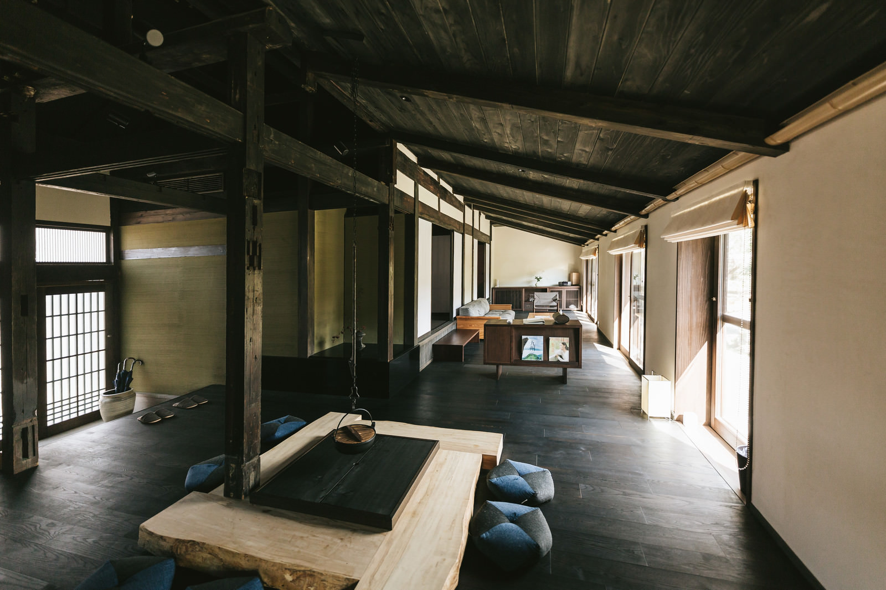
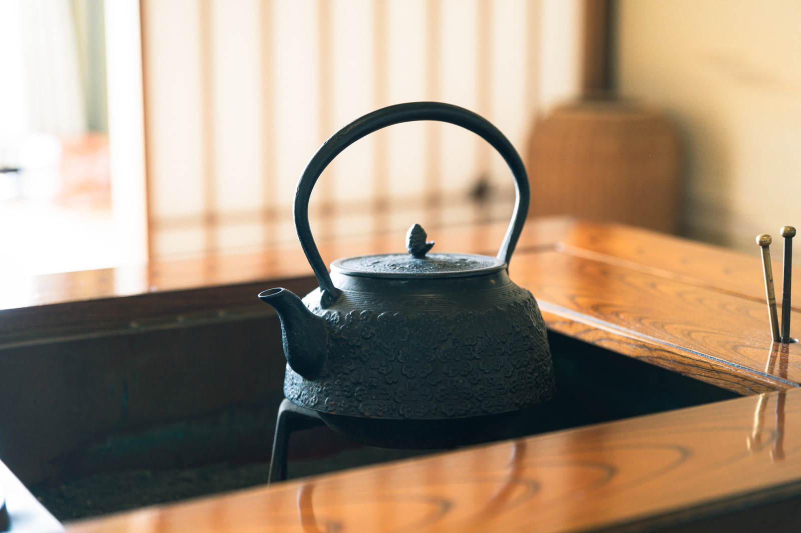
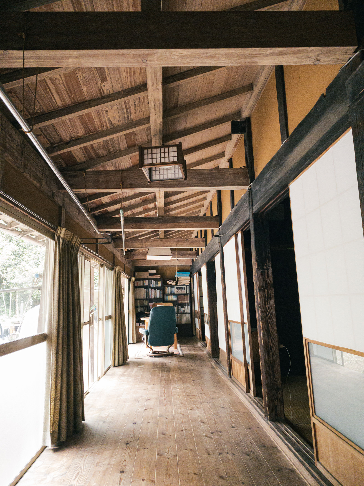
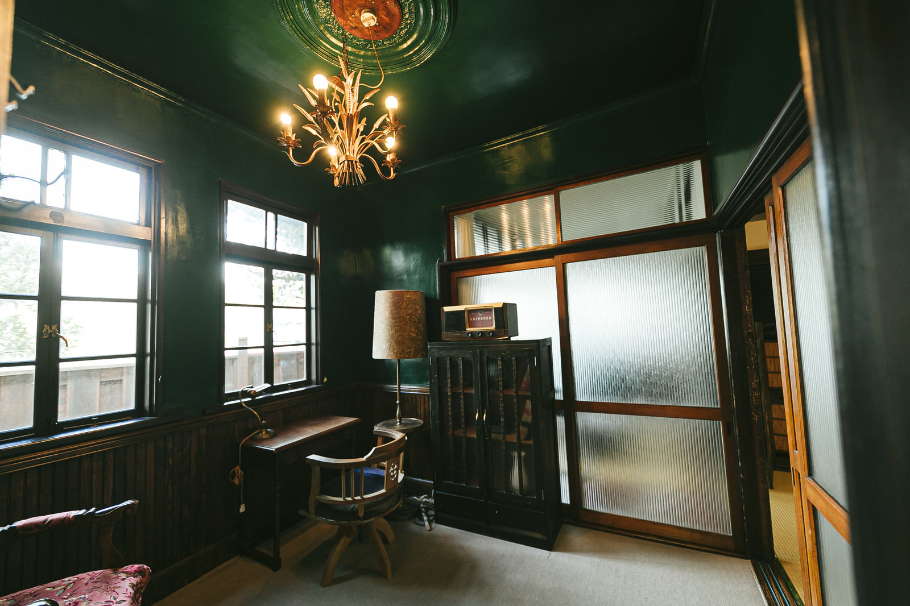

遠野ミルクの厚切りトースト
地元の新鮮なミルクを練り込んだ自家製パンを。季節の自家製ジャムと共に。
岩手県遠野市、民話の里として知られるこの地に、
築50年の古民家を再生したモダンリトリートが誕生しました。
伝統的な建築美と、現代の快適さが融合した空間で、
日常の喧騒を忘れ、穏やかな時間をお過ごしください。

遠野物語が綴られたこの地には、今も不思議な静寂が流れています。
かつて誰かが語った物語の続きを、
自身の体験として描いてほしいのです。
夜は薪ストーブの火を眺める。丁寧で、少しだけ特別な「日常」をご用意しております。
「朝陽とともに、特別な一枚を。」
地元の新鮮な遠野ミルクをたっぷりと練り込んだ自家製パンを、贅沢に厚切りにして焼き上げます。

築50年の歴史を感じる木の温もりに包まれながら、日常の疲れを解き放つ。窓から見える四季折々の景色を眺め、風の音に耳を澄ませる。
館内には、『遠野物語』をはじめ、遠野の歴史や民話を紐解く書籍を集めたミニギャラリーを併設しております。
住所： 〒028-0523 岩手県遠野市中央通り
電車： JR釜石線「遠野駅」より徒歩5分
お車： 釜石自動車道「遠野IC」より約10分


